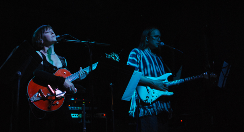
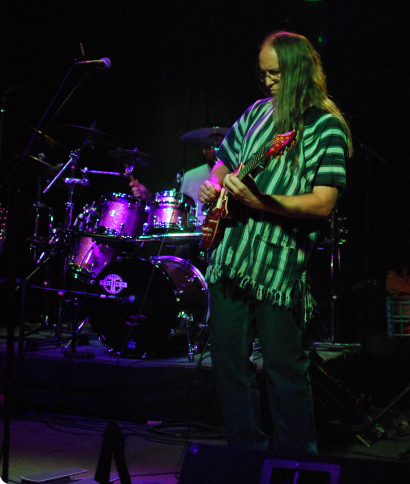

Our Mission
The Colorado Art Rock Society's mission is to foster a vibrant community that revolves around the exploration, dialogue, and appreciation of both emerging and timeless progressive rock music.
We are dedicated to creating a space where enthusiasts can engage in meaningful discussions, discover new artists, respectfully disagree, and offer support, cultivating a shared passion for the diverse and evolving world of progressive rock.

How It All Began
The Myth
The Colorado Art Rock Society was founded on March 12, 1999 by Phil Satterley and Alan Mallery. While waiting in line to see a Yes concert, Alan noticed Phil leafing through a copy of Paramhansa Yoganada's Autobiography of a Yogi. Phil was caught up in a footnote on page 92 that described a secret society of music lovers who only listen to music in odd meters.
After the show, Alan followed Phil back to his house where the two of them began holding sessions by candlelight. The concept came together during one 6-hour session which carried on until 7a.m. They had listened to Van Der Graaf Generator's entire back catalog. It was a magical experience that left both of them exhilarated for days. They both agreed that there was only one course of action and that was to form a music society for like minded and intelligent odd-metered music connoisseurs, The Colorado Art Rock Society.
The Real Story
A Note From Phil...
The Colorado Art Rock Society (C.A.R.S.) was formed in 1999 when Phil Satterley had a chance meeting with Alan and Carrie Mallery at the Bajaprog '99 Festival in Mexicali, Mexico (surprisingly the first people Phil even talked to after arriving in Mexico were also from Colorado!) The first meeting was on March 27,1999 when C.A.R.S. met at the Margarita Bay Club in Denver Colorado. With just 4 members at that meeting C.A.R.S. was born. Suddenly the numbers grew and after reaching over 15, C.A.R.S. moved out of the smaller back meeting room and was forced to take over the entire upstairs until December 29, 2001 when the club closed and the group moved to it's second location at the Morrison Inn in Golden Colorado (actually just down the street from the famed Red Rocks Amphitheater).
The group met there as the numbers grew and so did the noise level! The tiled floors and high ceilings made it quite difficult to hear the music, let alone hear each other! Finally it was decided to move. Our next location was the Yummy Yummy Thai restaurant on October 25, 2003 and the C.A.R.S. holiday party on December 13th. It was decided once again to move because of space issues and belly dancers?!?!?! and it was off to the Breckenridge Brew Pub (right next to the famed Coors Baseball field in Denver) where we are now. The space is the right size, it's a closed off meeting area as well as being perfect for listening to music as well as setting up a wide screen projector for watching Prog videos! -Phil Satterley
The Story Continues...
The last Saturday evening of each month is spent eating, drinking, making new friends as well as indulging in heavy doses of Progressive Rock conversations, listening and CD swapping. Membership has grown from a mere 4 people at the first meeting to over 130 members on the C.A.R.S. mailing list and keeps growing! Other events included hosting concerts like the Flower Kings on March 11, 2006 and again on October 19, 2006 and helping spread the word about local concerts (Porcupine Tree & Marillion) and holding our annual "Colorado Prog Jam" which was first held on April 26, 2003 where the musical members of our group get a chance to play "all of the Prog Songs they ever wanted to play in a band but were afraid to ask". On March 27, 2023, C.A.R.S. celebrated their 23rd year and things are looking great for the future! Prog On!